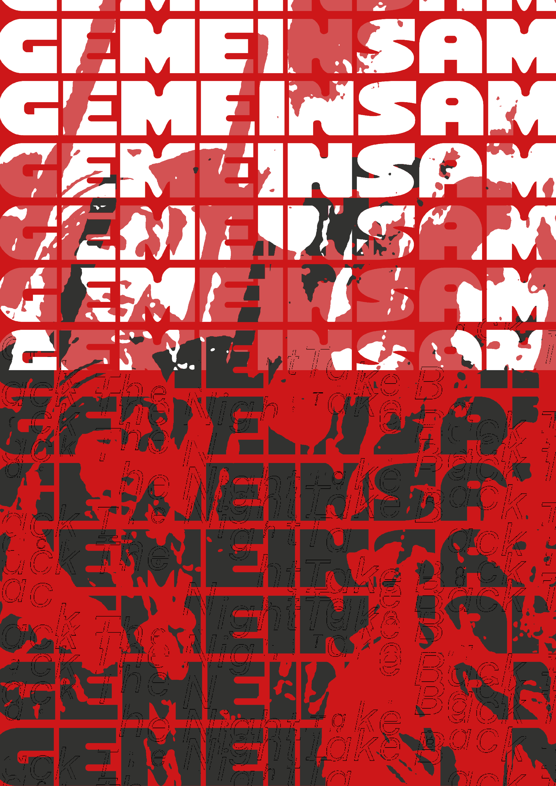
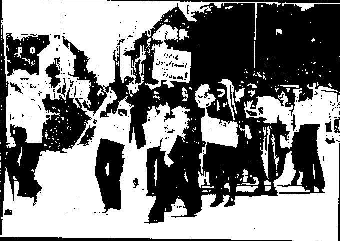
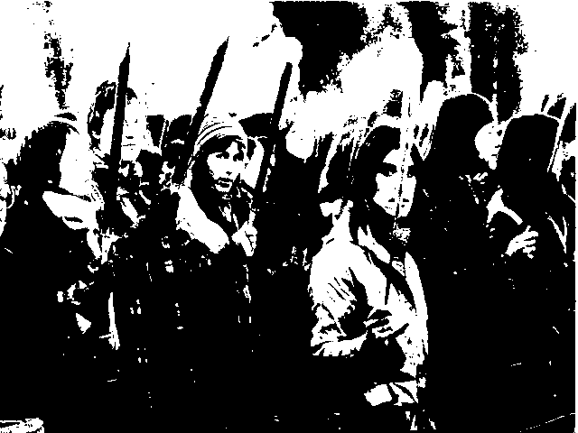
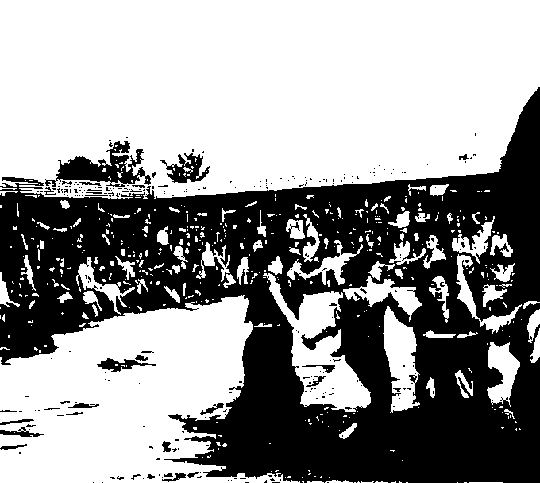
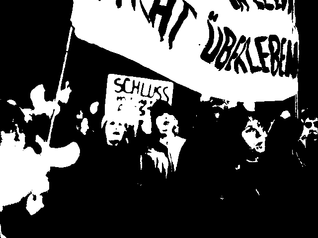
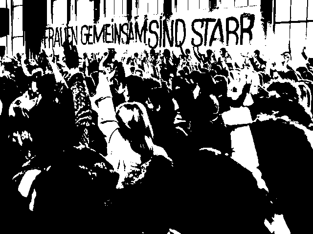

Wir holen uns
die Nacht zurueck.
Diese Website greift eine Protestaktion aus dem Jahr 1977 auf — die Walpurgisnacht-Bewegung, bei der tausende Frauen mit Fackeln und weiß bemalten Gesichtern durch die Straßen zogen, um gegen sexualisierte Gewalt und die Angst vor der Nacht zu demonstrieren. Das Projekt will an diesen Moment erinnern und die Eindrücke von Solidarität und gemeinsamer Stärke lebendig halten — als Geschichte, die noch nicht abgeschlossen ist.
Ein besonderer Fokus liegt auf der Maske. Das weiße Gesicht war kein bloßer Schutz — es war eine Geste der Aneignung. Die Feministinnen der 1970er Jahre identifizierten sich bewusst mit der Figur der Hexe: dem Monströsen, dem Anderen, dem, was das patriarchale Frauenbild bedrohte. Weiß geschminkt in die Nacht zu ziehen, bedeutete, diese Rolle anzunehmen und umzudeuten — als Stärke, nicht als Makel.
Hier kannst du eine solche Maske in Augmented Reality in deiner eigenen Umgebung platzieren, ein Foto machen und mitnehmen. Die Maske wurde nicht aus historischen Archiven entnommen, sondern eigens für dieses Projekt von der Studentin Birla Bublat neu geschaffen.
→ Zur MaskeWalpurgisnacht
seit 1977
Geschichte

Plakatraster
1977 — heute
Eine Protest-
aktion gegen
sexualisierte
Gewalt
„Frauen, wir
erobern uns
die Nacht
zurück.“

Fackelzug,
von oben
Take it
back.
Scrollen, um
der Geschichte
zu folgen ↓
Selbstbestimmung. Sexualität. Gewalt. Struktureller Ausschluss aus fast allen wichtigen gesellschaftlichen Zusammenhängen.

Archiv &
Straße
Jung, links,
ungeduldig
Das trieb in den 1970er-Jahren eine neue Generation von Frauen auf die Straße — ungeduldig mit den spießig-restaurativen Nachkriegsjahrzehnten.
Infostände,
Straßentheater,
Protest gegen
Miss-Wahlen
In den gemeinsam geplanten Aktionen entdeckten die Frauen etwas, das größer war als jede einzelne Forderung: weibliche Solidarität.
Ehe, Kinder-
erziehung,
Haushalt
„Diese ständigen Kämpfe — speziell in meiner Ehe, um Kindererziehung, um Beteiligung am Haushalt — das hat mir einfach gestunken. Und dann habe ich mich wohlgefühlt in einer Gruppe von Frauen, die das auch so gesehen haben.“
Kein Einzel-
schicksal
Unterdrückung ist kein Einzelschicksal. Die Einzelne stößt immer wieder an Grenzen, solange sich die gesellschaftlichen Strukturen nicht verändern.
GEMEINSAM,
wiederholt
Walpurgis-
nacht
Blocksberg,
Mittelalter

Reclaim
the Night
In der Walpurgisnacht — der Nacht der Hexen auf dem Blocksberg — ziehen seit 1977 tausende Frauen gegen Vergewaltigung und sexuelle Belästigung durch die Straßen. Mit Fackeln, Kerzen und weiß bemalten Gesichtern.
Als Hexen
verbrannt
„Take back
the night“
Ursprung:
USA
Schon im Aberglauben des Mittelalters konnte diese Nacht für Frauen, die allein das Haus verließen, zum Verhängnis werden. 1977 landete niemand mehr auf dem Scheiterhaufen — aber ein nächtlicher Ausflug „allein“ galt immer noch als riskant. Bis heute.

Gesicht &
Wut
In Frankfurt setzten sich Frauen handfest zur Wehr: Pöbelnde Männer wurden kurzerhand in die Flucht geschlagen.
Rasseln,
Wecker,
Trommeln
Rufe von
der Straße

Schrei,
Nahaufnahme
„Wir sind Frauen,
wir sind viele,
wir haben die
Schnauze voll.“
„Frauen, hört
ihr Frauen
schrein, lasst
sie nicht allein.“
„Frauen
gemeinsam
sind stark.“
„Wir erobern
uns die Nacht
zurück.“
Frauen tanzten und sangen voll Wut und Leidenschaft auf der Straße. Schwarz gekleidet, mit weiß geschminkten Gesichtern, zogen sie gegen Gewalt und Unterdrückung durch die nächtliche Stadt.
Eng
umschlungen
Erste Stimme,
erstes Mal
Eng umschlungen mit der besten Freundin oder der Geliebten trotzten sie der weit verbreiteten Homophobie der Straße.
Patriarchats-
kritikerin der
ersten Stunde
Der gemeinsame Auftritt war kein Zufall, sondern Strategie: laut sein, sichtbar sein, nicht mehr allein sein.
Galerie
Sieben
Bildfragmente
01 — Plakat-
raster
02 — Hand-
schrift
03 — Archiv
04 — Porträt
05 — Schrei
06 — Fackel-
zug
07 — Wieder-
holung
Zum
Vergrößern
anklicken
Die Maske
Anonymität
als Schutz
Weiß geschminkte Gesichter waren das stille Erkennungszeichen der Walpurgisnacht-Demonstrantinnen. Betrachte die Maske in 3D, platziere sie per AR in deinem Raum.
Maskierung
als Statement
Halte den
Moment im
Foto fest
Die erste Maske
Weiß geschminkte Gesichter als stilles Erkennungszeichen der Walpurgisnacht-Demonstrantinnen.
Maske erstellt von Birla Bublat — @bybirla
Die zweite Maske
Eine Variation — Anonymität als Schutz, Maskierung als Statement.
Die dritte Maske
Jede Maske ein eigenes Gesicht — gemeinsam ein stiller Chor.
Take Back The Night ist keine Erinnerung an etwas Vergangenes — die Forderung steht weiterhin. Sprich darüber. Geh hin, wenn in deiner Stadt demonstriert wird.
Trag die
Maske weiter
Trag die
Fackel weiter